There is no 2023 or 2024 video available for this lesson. You can view the 2022 video instead if you'd like, but remember, it might not match the instructions.
After completing this lesson, you’ll be able to:
There is no 2023 or 2024 video available for this lesson. You can view the 2022 video instead if you'd like, but remember, it might not match the instructions.
Several FME transformers are designed to work with list attributes. In the previous lesson, we discussed list creation. In this lesson, we will discuss the top transformers used to manipulate, transform, and analyze lists. About 15 transformers manipulate list attributes, plus more on FME Hub.
Other useful transformers include the AttributeManager, AttributeRemover, or AttributeKeeper to clean up and remove redundant lists. It's good practice to clean up lists after finishing with them, which will result in better workspace performance. Remove any excess lists as early in the workspace as possible so that FME only translates essential attributes.
The ListTransformerExamples.fmwt workspace template builds on the scenario from the previous article, where we used list attributes to store all trees within each park. The below examples refer to this workspace when demonstrating how to use list transformers to work with the _trees{} list.
Download the template and open it with FME Workbench (2024.0 or later).
Ensure Run > Run with Feature Caching is enabled, and then run the workspace.
In each section below, we will discuss the transformer's function and provide an example of its use.
The simplest of the list-handling transformers, ListElementCounter returns the number of elements in a list. For example, we can use it to count the elements in the _trees{} list and store that number in the _treeCount attribute.
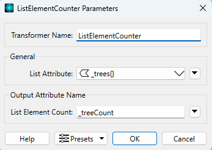
Since the number of elements in the list represents the number of tree points within a particular park, the result tells us how many trees are in each park. For the first feature, the value of _treeCount is 22.
You can use this transformer with the ListIndexer to return the value of the elements in the list based on their order:
@Value(_element_count) - 1@round(@Value(_element_count)*0.5,0) to get the value roughly in the middle of the listThe ListExploder is in the top 30 most frequently used FME transformers because of its power to turn lists into distinct features. It explodes a list by creating a separate feature for each list element. Most formats cannot write list structures (XML and JSON being notable exceptions), so exploding lists can be helpful when elements need to be preserved.
The ListExploder parameters allow you to specify the list to be turned into distinct features. An "Element Index" attribute can be added to each feature to store the element's position in the original list.
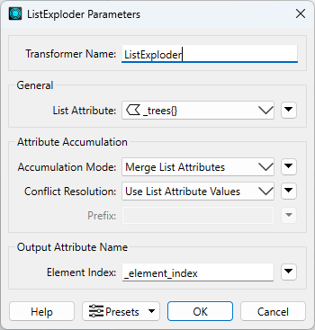
In the “Attribute Accumulation” section, you choose how to merge or preserve the incoming attributes. "Accumulation Mode" has three options:
"Conflict Resolution" helps resolve problems when an exploded list attribute has the same name as one of the original attributes. You can either preserve the original attribute or give the exploded attribute precedence. If you use Prefix List Attributes, there is no need for conflict resolution.
Check the ListExploder documentation for more details on how to configure these parameters.
When we explode the _trees{} list into distinct features, the features outputted by the ListExploder keep their respective park attributes, as well as the attributes of that particular tree.
The ListExploder also adds a new _element_index attribute to indicate the position of this element in the original list.
Run the workspace and inspect the output to see how the new table represents the trees. Note that 125 features go into the transformer, and 3,251 come out, which indicates that the list has successfully exploded into distinct features.
Sorting lists, alphabetically or numerically, makes picking off specific characteristics from a list easy. For example, we can use the ListSorter to sort the list by the Diameter attribute to find the largest trees.
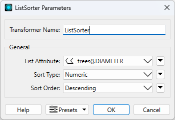
Inspect a feature. The trees in the list should be sorted be descending order of diamater, so the largest trees are earlier in the list:
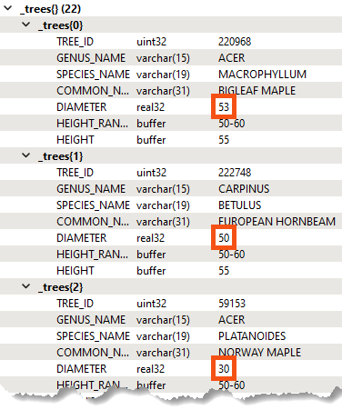
The ListIndexer is more selective about turning lists into distinct features. Instead of exploding all list elements like the ListExploder, it only explodes the element(s) at a given index, e.g. {1}. This transformer is often placed after another transformer that arranges the list in a particular order before choosing the index – for example, the ListSorter or ListSearcher.
The ListIndexer can pick the largest tree in the _trees{} list. First, the ListSorter is used to sort the list by the _trees{}.Diameter attribute. Next, the ListIndexer is used to get the tree at index 0. The result is stored in a set of new attributes with the prefix _largestTree_.
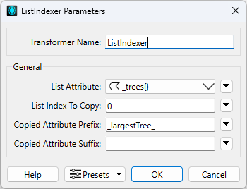
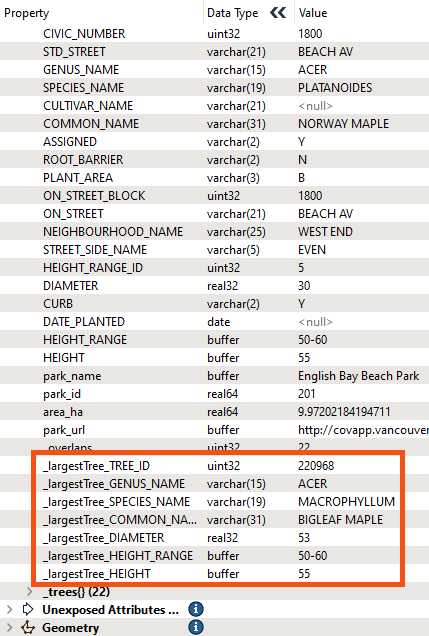
The ListHistogrammer builds a histogram from the values in a list and returns these in a new list. The new list is sorted, so the value with the most occurrences will be first.
We can use the ListHistogrammer to find the park with the most trees and find out how many of each species are in each park.
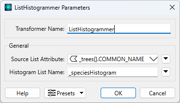
With these parameters set, the transformer will count how many of each tree name exists in the _tree{} list. It returns the _speciesHistogram{} list. Note how the resulting list includes .count and .value list attributes:
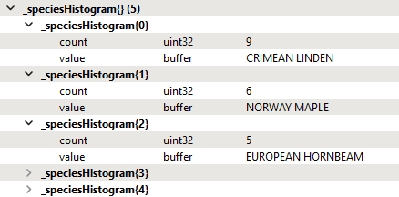
Inspect the output, select a park (e.g., English Bay Beach Park), and view its attributes in the Feature Information pane. English Bay Beach Park contains a _speciesHistogram{} list with five elements. It shows that the park contains nine Crimean Lindens, six Norway Maples, etc.
The ListConcatenator strings the elements of a list together into a single attribute value. In the parameters, you can specify which character to use as a separator (e.g., a comma or a newline character) and the name of the resulting attribute.
The ListConcatenator can create a comma-separated list of tree species in each park. The new attribute is called _species. The example in the workspace refers to a list generated by the ListHistogrammer.
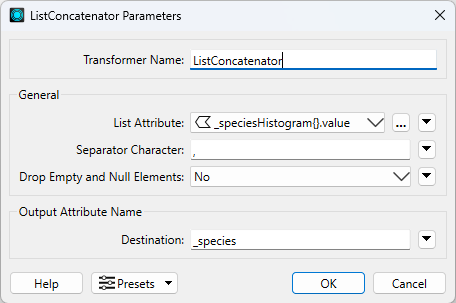
When we inspect the result in the Feature Information pane, we can see the _species attribute with the concatenated list:
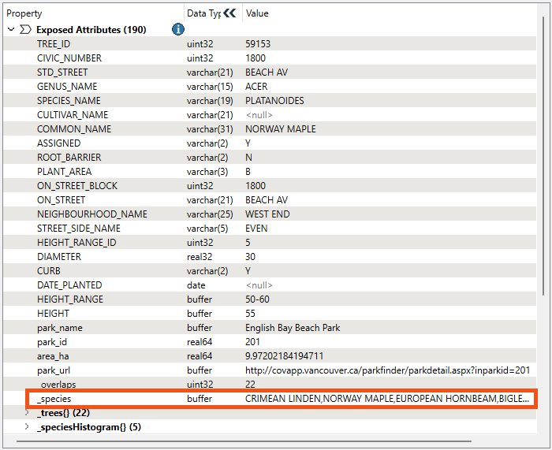
The ListSearcher allows you to use regular expressions or conditionals to search for patterns in a list and identify which element the pattern was found in.
We can use this transformer to search the _trees{} list for elements with "Oak" in the COMMON_NAME. The index of the first element that contains the string is saved in an attribute called _list_index.
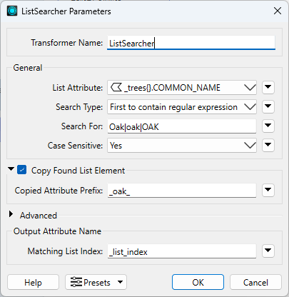
The Copy Found List Element parameter replicates the functionality of the ListIndexer by copying the list elements into attributes prefixed with _oak_. Note the new attributes produced by the ListSearcher (make sure you inspect the Found port, not the NotFound port):
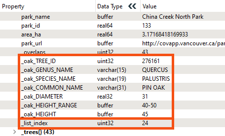
Each park contains a _tree{} list, and only the first match is found for each park. In this scenario, there are 125 parks, and 37 parks contain an "Oak" tree.
If you want to extract the element of interest from the list, you can use a ListIndexer and pass it _list_index as the element to extract, as shown in the example workspace.
The ListSummer computes the sum of all elements in a list and stores the result in an attribute.
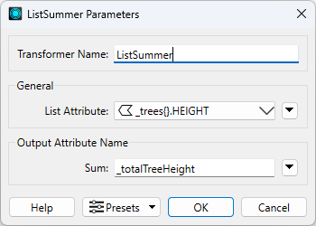
For example, for each park, we can determine the total height of all the trees (stored in _totalTreeHeight) and then divide it by the number of list elements to get the average tree height in that park. Check out the configurations and results of the ListElementCounter_2 and AttributeCreator_2 to see how to do that. There's also an animal-related Easter egg in there if you look close enough... 🦒
The ListRangeExtractor returns the minimum and maximum of a list element.
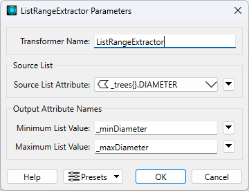
For example, this transformer can get each park's smallest and largest tree diameters, stored here as _minDiameter and _maxDiameter:
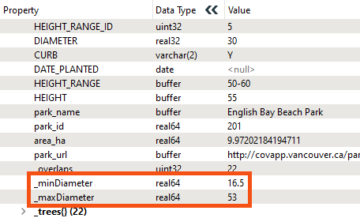
The ListRenamer renames or promotes list names or components. Promoting a list component means it will become a simple list instead of a subcomponent of a complex list, e.g. _trees{}.Species_Name can be promoted to Species_Name{}. This makes the list of tree species a list instead of a subcomponent of the _trees{} list.
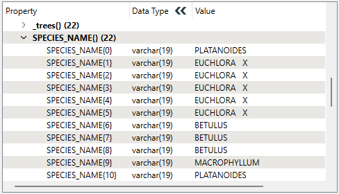
The ListBuilder is a join transformer that merges features based on common attributes. The attributes selected in the Group By parameter become the join key, meaning a feature is output for each combination of values of the specified Group By attributes.
Note the ListBuilder removes the geometry and only preserves attributes listed in the Group By parameter, so if geometry is required, you can recreate it using a VertexCreator or similar transformer, or use the Aggregator.
We have tree species and park names and want to find which parks have a specific genus of tree in them. We can use the ListBuilder to group features by GENUS_NAME:
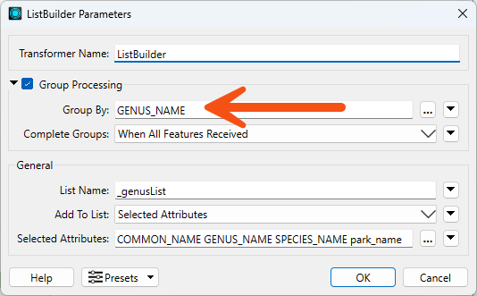
We can also set the "Add To List" parameter to Selected Attributes and choose which attributes to include in the resulting list, _genusList{}. When we run the workspace, the original 125 features are merged into 37 features, grouped by their GENUS_NAME.
When we inspect the resulting list in the Feature Information pane, we can see that features have been grouped by Genus. For example, this list includes four different parks that all contain trees of the "THUJA" genus:
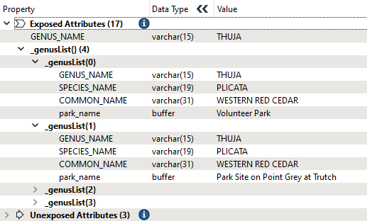
An excellent alternative to ListBuilder is the Aggregator transformer. The Aggregator offers a broader range of functionality, particularly around geometry handling.
To generate a list with the Aggregator, enable the Generate List parameter:
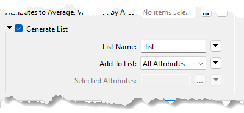
The configuration of this parameter group is the same as the ListBuilder.
The major difference with the Aggregator is that it is designed to create aggregate geometry. The ListBuilder drops geometry when creating its list. By default, the Aggregator will create a single aggregate geometry for all input features:

However, if you enable Group Processing, you can create aggregate features within groups defined by attribute values. When generating a list in this scenario, each aggregated feature gets its own list with values corresponding to the features in that group.
The ListDuplicateRemover cleans up a list by removing elements with duplicates of a particular attribute value.
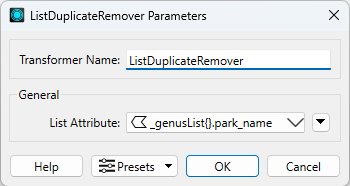
For example, in the ListBuilder example above, we can find which parks have a specific Genus of tree while avoiding listing the same parks multiple times. If several oak trees exist in the same park, then by default, the park will be named in the resulting list for every oak tree discovered there, which is redundant.
If we remove duplicate park names, the result looks like this after the ListConcatenator_2.
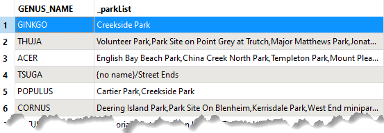
There are quite a few ways to turn key-value pairs into features, but let's look at a common workflow that involves the AttributeCreator and Aggregator.
In the bookmark titled "Turn key-value pairs into features," inspect the output of the Key-Value Pairs port in the collapsed bookmark:
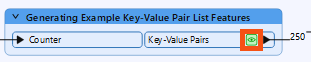
You will see 250 features. Based on the value of the only exposed attribute, id, you can see there are actually two features for every id. Additionally, each feature has a list _list{} holding a key-value pair, one for DIAMETER and one for HEIGHT:
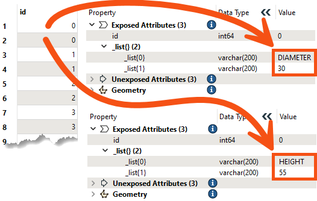
To avoid any confusion, note that we did not use the attribute park_id as our unique ID here, as there are actually multiple park polygons with the same park_id. Instead, we will use a unique attribute called id.
How can we turn these 250 features with lists into 125 features with DIAMETER and HEIGHT as attributes?
The first step is to create the DIAMETER and HEIGHT attributes and supply them with a value. There is a bit of a shortcut you can take here: dynamically creating attributes using the AttributeCreator.
Inspect the Attribute_Creator_4's parameters:
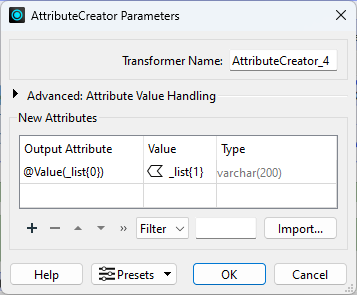
It's not common knowledge that you can actually use the @Value() expression in the Output Attribute field in the AttributeCreator. But this is powerful; it lets you create more than one attribute from a single expression. Because there are two possible values for the expression @Value(_list{0}) in our data, it will create two attributes, DIAMETER and HEIGHT. It will give them the correct value because that is stored in _list{1}.
The benefit of this technique is that, in theory, we could have many attributes stored in the same way, but the AttributeCreator would create as many as we needed.
Click OK and inspect the AttributeCreator_4's feature cache. You'll see that each feature now has a single unexposed attribute with the correct value corresponding to whatever attribute was stored on its _list{}, DIAMETER or HEIGHT.
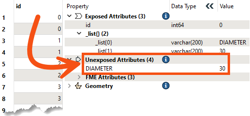
Now look at the Aggregator's parameters. It groups the features by id, which means we will get back the original number of features, 125. We also have to specify to Merge Incoming Attributes, otherwise, by default, it will remove all attributes.
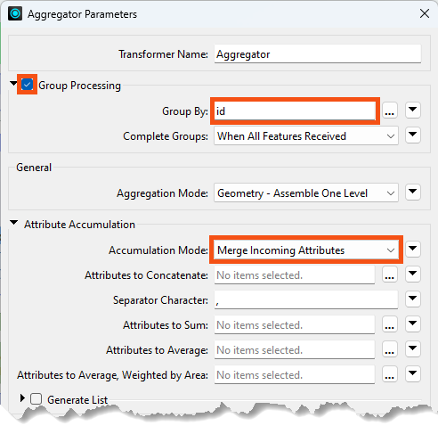
Inspect the Aggregator's Aggregate feature cache. Now we are back to the 125 original features, and we have an unexposed attribute for both DIAMETER and HEIGHT on each feature:
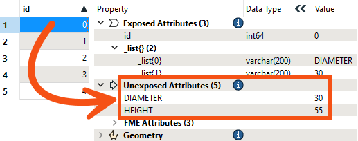
The final step is to unexpose these attributes. We can use an AttributeExposer for this, but it could be tedious to manually type in the name of every attribute we wanted to expose, especially if we had more than two.
Here's a shortcut. You can add an AttributeExposer if you want to follow the steps:
Now all your attribute names will be filled in for you. This is a great shortcut when working with JSON or XML files, where you may have to expose many attributes.
Inspecting the AttributeExposer's Output port shows the key-value pairs exposed as attributes:
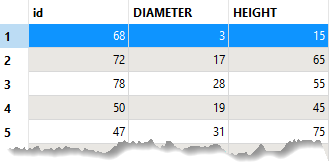
Don't forget to remove the list now that you don't need it! The AttributeRemover_5 takes care of that step in the example workspace.
Python can be useful for performing more advanced list manipulation. There is a close correlation between Python lists and FME lists – consider the following list of tree names and compare the Python list to the FME list attribute:
Python:
_trees = ["Fernleaf Beech", "Aristocrat Pear", "European Beech", "Pin Oak"]
FME:
_trees{0} = Fernleaf Beech_trees{1} = Aristocrat Pear_trees{2} = European Beech_trees{3} = Pin Oak
For example, say we want to search a list for elements that meet two conditions: it is a Maple tree, and it has a canopy diameter greater than 25. We could chain together two ListSearchers to check each condition:
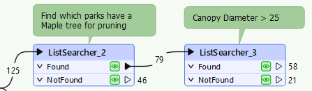
This indicates which parks have Maple trees with stem diameter at breast height greater than 25 cm, but it doesn't output a list of all of the qualifying Maple trees. We can achieve this more advanced scenario with Python using the PythonCaller.
Two calls help pass lists in and out of Python. Start with feature.getAttribute():
_treesName = feature.getAttribute('_trees{}.CommonName')
Then, perform the desired list manipulation and then finish with feature.setAttribute():
feature.setAttribute('_trees{}.CommonName', _treesList)
Refer to the PythonCaller in the exercise workspace to see the Python code. The results of the workspace are in the _treesMaple{} list attribute:
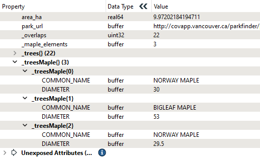
You need to expose the Python result attributes in the PythonCaller if you want to work with them in subsequent transformers using the Attributes to Expose parameter.
See the Python FME API documentation for more details on these methods.
See Python and FME Basics for a tutorial on working with Python in FME.
Many transformers, like the Tester, TestFilter, and AttributeManager, allow you to select an attribute. If you select a list attribute, FME will prompt you with the List Element Selection dialog, where you can choose the element number:
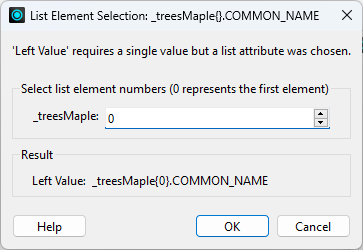
These parameters specify the CommonName attribute from the element at _trees{0}. If you don't want to hard-code the element number, specify an attribute instead of a number using the Text Editor. For example:
@Value(_treesMaple{@Value(_maple_elements)}.COMMON_NAME)
See the AttributeCreator in the Python example above.
Find the rarest and most widespread Genus for trees within parks by expanding on the example workspace.
Write it down; you will need it for the quiz.